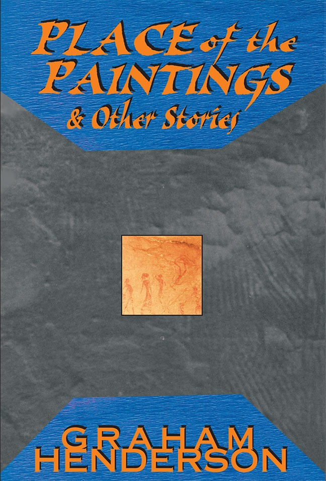

Place of the Paintings and Other Stories
Graham Henderson

Description
After all the Napoleons had betrayed themselves, there was always love. Graham Henderson collects in Place of the Paintings his favourite stories of the last twenty years. He moves from the mythic tales of the early 1980s to his later magical imagery, and confesses, in a postscript, the wellspring of his imagination. His work is unique in our fiction. His imagination creates a remarkable cosmos - a man coughs up fragments of glass in a sideshow, a neanderthal woman in 19th century Russia, a letter from exile to an unknown man, an alien from the extinct planet of Manao, the biblical Lazarus and a female Odysseus in ‘Sand ’ . His stories are hauntingly unfamiliar but they visit our unconscious.
Description
After all the Napoleons had betrayed themselves, there was always love. Graham Henderson collects in Place of the Paintings his favourite stories of the last twenty years. He moves from the mythic tales of the early 1980s to his later magical imagery, and confesses, in a postscript, the wellspring of his imagination. His work is unique in our fiction. His imagination creates a remarkable cosmos - a man coughs up fragments of glass in a sideshow, a neanderthal woman in 19th century Russia, a letter from exile to an unknown man, an alien from the extinct planet of Manao, the biblical Lazarus and a female Odysseus in ‘Sand ’ . His stories are hauntingly unfamiliar but they visit our unconscious.
{kind=link}
Information
| ISBN | 1876044411 |
| Release | 2004 |
| Pages | 161 |
About the Author
Reviews
Andrew Peek, Island
Fiction Andrew Peek Island , No. 97, Winter 2004 Graham Henderson writes big, risky fictions. Some of them come off, others don’t. His best stories combine imaginative flair and luminous, rhythmical prose with a readiness to exploit the mythopoeic. They feature wonderful sentences like: ‘That blue, there was no name for it, no colour on earth to mirror it; it was almost like a huge breach in the constant world of the visible.’ Less successful stories, on the other hand, offer: ‘In my mind her small dark nipples kissing them, her body light as a flower, above me, beneath me, penetrating invisible sorrowing ecstasies,’ which left me entirely locked out of whatever processes, psychic or otherwise, the speaker is supposed to be going through. The earlier stories in the collection are among the strongest, together with ‘The Glass Man’, a dark tale of creativity, love and healing, at the book’s end. ‘The She-Wolf,’ ‘The Place of the Paintings’ and ‘The Ice’ all reminded me of William Golding’s remarkable 1955 novel The Inheritors , a sci-fi work that goes back, rather than forward, in time. ‘The Place of the Paintings’ is particularly impressive. It explores the workings of artistic consciousness at a profound level, in the person of an artist recording narratives of animals, landscape and people around him. Like the other two stories, the setting is ancient and tribal. As is the case with Golding’s novel, the reader is offered radically new perspectives on art, belief and identity. The challenge is to use the sophisticated possibilities offered by language and contemporary narrative form to evoke the oral and preliterate. The results test and extend language to remarkable effect. Later stories explore characters drawn from Homer, the Bible, ranging widely and in what might be described as a Laroussian fashion through world mythology. To redramatise the story of Lazarus from his point of view is a big ask, as the execution of this tale called ‘Lazarus’ indicates. According to the cover notes, ‘Sand’ is about a female Odysseus. I found it difficult to follow and, even with the aid of the cover note, the connection with the Odyssey remained unclear to me. ‘Room’ is a five-page, paragraphless dramatic monologue incorporating allusions from the Great Transmutation of alchemy to the World Tree of the Kabbalah and many points ancient and modern, in between. I had trouble coping with the narrator, a crucial component in any dramatic monologue, and this went hand in hand with a broader lack of artistic discipline and control in the use of mythic sources. There’s no lack of ambition in these fictions but form and content don’t always support each other as effectively as one might expect to find in, for instance, something comparable by Borges or Edgar Allan Poe. In addition, errors in spelling and tense indicate a lack of finish. Talking of ‘finish’, the last narrative, a ‘Postscript’ entitled ‘Asylum’ and billed by the cover note as a confession of the ‘wellspring of [the author’s] inspiration’, is rambling and, if in reality autobiographical, poses problems for the reader. In an acknowledgment to his book Henderson thanks family and friends for their love through the ‘last fourteen years’ of his ‘illness, schizophrenia’. The critic’s first rule is to avoid naive connection between life and work: in this case, though, I was left wondering if Henderson’s editor had spent enough time pondering how they worked together.
Lucy Sussex, The Sunday Age
Short Fiction Lucy Sussex The Sunday Age , 26 October 2003 The fantastic is not only found in enormous tomes with dragons on the cover. Indeed, it is increasingly found in ‘mainstream’ or ‘general fiction’, as with this book. Place collects Graham Henderson’s favourite stories written over the past 20 years, although less than half have been previously published. The mode here is elliptical, languid, even Borgesian (said writer being namechecked in the book). Nor is it particularly Australian, the sensibility and settings tending to the European. We get an ex-sideshow freak, cursed with the ability to cough up glass; cavemen; even an alien. Pick of bunch: the five and a half pages on the Biblical Lazarus.
Antipodes Review
Place of the Paintings and Other Stories Isolation, Madness and Burdensome Prose Anna Marie Christiansen Antipodes , Vol. 18, No. 2, December 2004 (pgs 183-184) [Text not yet available]